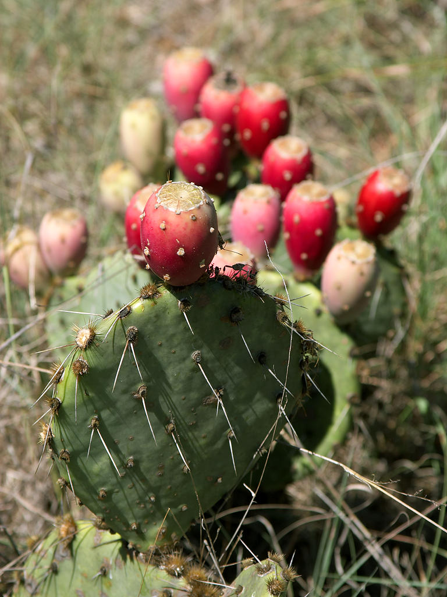
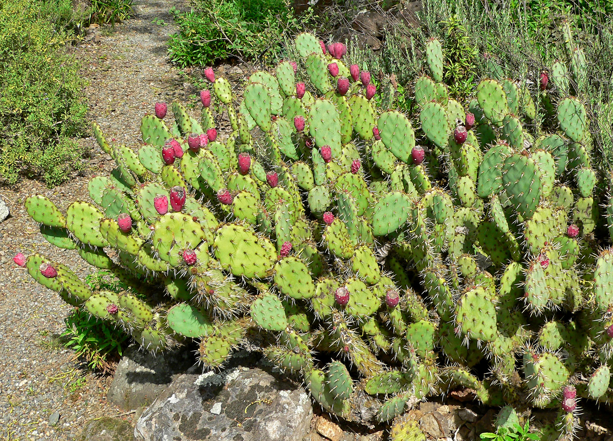

Opuntia, commonly called prickly pear, is a genus in the cactus family, Cactaceae. Prickly pears are also known as tuna (fruit), sabra, nopal (paddle, plural nopales) from the Nahuatl word nōpalli for the pads, or nostle, from the Nahuatl word nōchtli for the fruit; or paddle cactus. The genus is named for the Ancient Greek city of Opus, where, according to Theophrastus, an edible plant grew and could be propagated by rooting its leaves. The most common culinary species is the Indian fig opuntia (O. ficus-indica).
O. ficus-indica is a large trunk-forming segmented cactus which may grow to 5–7 metres (16–23 ft) with a crown of possibly 3 metres (9.8 ft) in diameter and a trunk diameter of 1 metre (3.3 ft). Cladodes (large pads) are green to blue-green, bearing few spines up to 2.5 centimetres (0.98 in) or may be spineless. Prickly pears typically grow with flat, rounded cladodes (also called platyclades) containing large, smooth, fixed spines and small, hairlike prickles called glochids that readily adhere to skin or hair, then detach from the plant. The flowers are typically large, axillary, solitary, bisexual, and epiperigynous, with a perianth consisting of distinct, spirally arranged tepals and a hypanthium. The stamens are numerous and in spiral or whorled clusters, and the gynoecium has numerous inferior ovaries per carpel. Placentation is parietal, and the fruit is a berry with arillate seeds. Prickly pear species can vary greatly in habit; most are shrubs, but some, such as Opuntia echios of the Galápagos, are trees.
